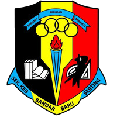
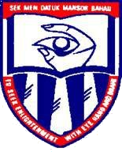
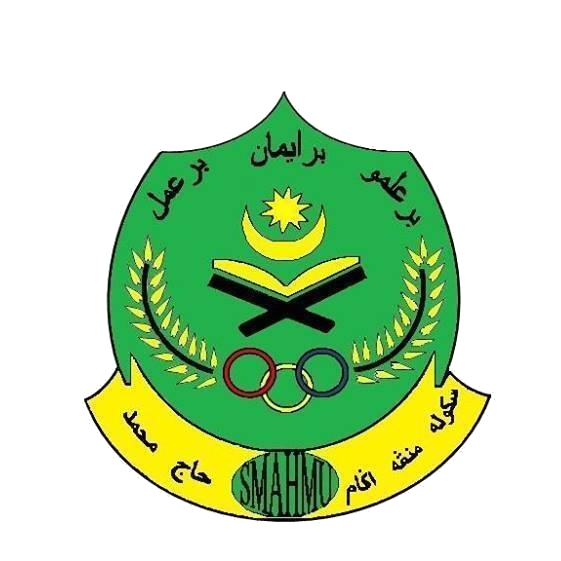
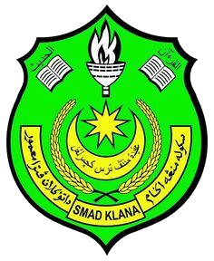

Education
- UPSR
- PT3
- SPM
- STPM
- DIPLOMA
PRIMARY SCHOOL
SK BANDAR BARU SERTING(2007-2012)

In 2007, I start my journey as a student life at SK Bandar Baru Serting, Jempol, Negeri Sembilan.
At school, I am active in running sport such as 100 meters and 4x100 meters
and also involved in marching competition.
I am also a school prefect in standard six.
I joined the Malaysian Red Crescent Society and Badminton club.
SECONDARY SCHOOL
SMK DATUK MANSOR(2013-2015)

I continue my studies at SMK Datuk Mansor, Bahau, Negeri Sembilan.
I was a librarian in form 2 until form 3. I joined PPIM and archery club.
I hold a position as a secretary in the Arabic language club.
SMA HAJI MUHAMAD(2016-2017)

I went to SMA Haji Muhamad to continue my studies in Islamic studies which are
Arabic language, Pendidikan Syariah Islamiah, & Pendidikan Al-Quran dan As-Sunnah.
I joined the Malaysian Red Crescent Society and actively involved in camping activities.
STPM
SMA DATO' KLANA PETRA MAAMOR(2018)

Before entering University, I went to Form 6 classes for 1 month.
The subject involved Pengajian Am, Arabic language, Syariah, & Usuluddin.
DIPLOMA
UiTM KEDAH(2018-2020)

I continue my studies in Diploma in Library Management, Faculty of Information Management at UiTM Kedah. It was
located at Sungai Petani, Kedah. This course provide 4 Semesters in total. UiTM Kedah is the only one offering this course for Diploma level.
Every students will be trained in industrial training in Semester 3.